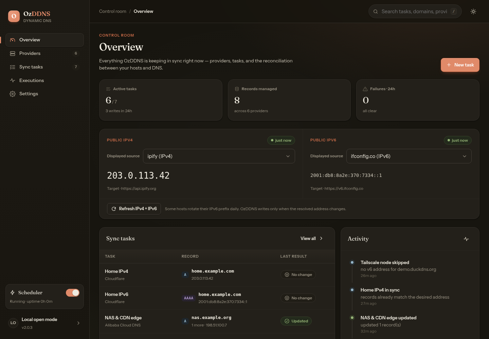
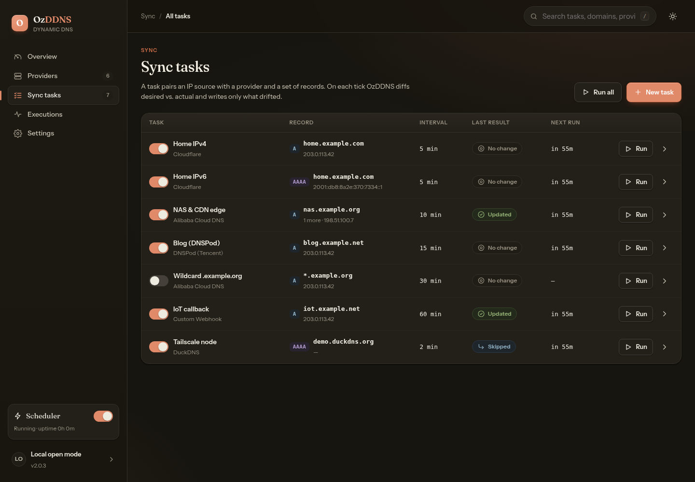
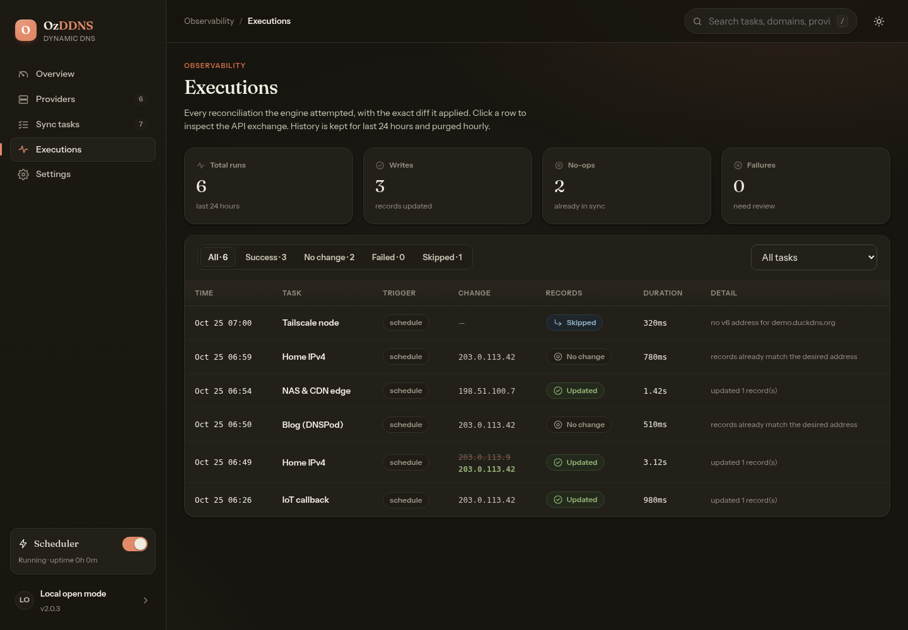

Reconciliation first
Reads the live record, computes the diff, and writes only when the desired state differs.
v2.0.3 · self-hosted dynamic DNS
OzDDNS discovers your address, reads the live record, and writes only when the two disagree. The panel, REST API, CLI, scheduler, and SQLite storage all ship in one Go binary.
Binds to 127.0.0.1 by default — HTTPS stays at your reverse proxy.
# one volume, one container, one process
docker volume create ozddns-data
docker run -d --name ozddns \
--restart unless-stopped \
-p 127.0.0.1:9876:9876 \
-v ozddns-data:/data \
ghcr.io/echoface/ozddns:latest \
--db /data/ozddns.db \
serve --listen 0.0.0.0:9876
# panel → http://127.0.0.1:9876Matching values skip the write entirely.
01 Reconciliation
Every run follows the same path. Nothing is written on a guess, and every execution is recorded.
Resolve the current address from an HTTP endpoint, a local interface, a shell command, or a static value.
Read the DNS record from the provider and compute the difference between desired and current.
Update only when the target differs, then keep the run in rolling history.
02 Capabilities
The interesting part of dynamic DNS is deciding what to write. Everything else should be predictable.
Reads the live record, computes the diff, and writes only when the desired state differs.
Dry-run a task from the panel, the CLI, or the API and inspect the exact change before it lands.
Configure multiple accounts independently and reuse each one across any number of tasks.
HTTP lookup, local interface, shell command, or a static IPv4/IPv6 value — chosen per task.
Panel, CLI, and API call the same use cases, so behavior cannot drift between surfaces.
Per-task intervals, optional jitter, concurrent workers, pause/resume, run-all, and rolling history.
Webhook notifications, configuration export/import, health checks, and JSON output from the CLI.
The production Vue panel is embedded with go:embed. Ship one file; there is no runtime to install.
English, Simplified Chinese, and Japanese, with light, dark, and system themes.
03 Providers
Each adapter has its own credential form, zone lookup, and record API. The reconciliation engine stays provider-independent.
cloudflare
alidns
dnspod
duckdns
namecheap
godaddy
desec
vercel
custom
IPv4 A and IPv6 AAAA targets where the provider supports them. Cloudflare proxy state is available on Cloudflare records. See the panel →
04 Panel
Captured from the embedded panel with the demo dataset: overview, sync tasks, and execution history. No mockups.



05 Setup
The panel is the shortest path. The same workflow is available from the CLI and the REST API.
Add credentials for one account and validate them against the provider.
Choose HTTP, interface, command, or a static address, and pick the IP family.
Point the source at DNS targets such as
home.example.com:A:300.
Dry-run the diff, run it once, and leave the interval enabled.
./bin/ozddns --db ./ozddns.db \
job run --dry-run <job-id>
./bin/ozddns --db ./ozddns.db \
job run <job-id>
Provider, source, and task creation all have CLI equivalents. Use
--json for machine-readable output.
06 Deploy
One process owns the HTTP server, scheduler, reconciliation, and retention. systemd, Docker, or Compose only supervise that process.
docker volume create ozddns-data
docker run -d \
--name ozddns \
--restart unless-stopped \
-p 127.0.0.1:9876:9876 \
-v ozddns-data:/data \
ghcr.io/echoface/ozddns:latest \
--db /data/ozddns.db \
serve --listen 0.0.0.0:9876
The published port stays on loopback. Expose it only behind a
trusted reverse proxy. Use a version tag such as
2.0.3 for reproducible deploys.
docker compose up -d
# pull a specific release
OZDDNS_IMAGE=ghcr.io/echoface/ozddns:2.0.3 docker compose up -d
# follow the daemon
docker compose logs -f
The bundled Compose file uses host networking so interface sources
can read the host's NICs. The panel still binds 127.0.0.1; set
OZDDNS_LISTEN to change it.
git clone https://github.com/echoface/ozddns.git
cd ozddns
make build
./bin/ozddns --db ./ozddns.db serve
Needs Go 1.26+, Node.js 22+, and GNU Make.
make build compiles the panel, embeds it, and writes
./bin/ozddns.
07 Security
OzDDNS targets a trusted single-user machine. It is explicit about where that boundary ends.
The daemon binds 127.0.0.1:9876. An open panel reachable beyond loopback is flagged in the CLI and the UI.
Password → TOTP or a single-use recovery code → an opaque server-side session. Enrollment starts from loopback.
Only an HttpOnly, SameSite=Lax cookie is
sent to the browser; the database stores token hashes.
Provider credentials are masked in normal panel, CLI, and API reads. Configuration exports do contain them — protect the files.
trustProxy stays off until every request arrives
through a proxy that overwrites X-Forwarded-Proto and
X-Forwarded-For.
OzDDNS does not terminate TLS. Put nginx or another trusted reverse proxy in front before exposing it.
08 FAQ
The short version of what OzDDNS is, what it supports, and where its security boundary sits.
OzDDNS is a provider-centric dynamic DNS manager. It discovers the current address from an HTTP endpoint, a local network interface, a shell command, or a static value; reads the live DNS record; and writes only when the two differ.
The source is publicly available on GitHub, but the repository does not include a license yet. Source availability alone does not grant permission to use, modify, or redistribute the project; a license must be added before treating it as open source.
Cloudflare, Alibaba Cloud DNS (alidns), DNSPod, DuckDNS, Namecheap, GoDaddy, deSEC, Vercel DNS, and a custom HTTP endpoint. IPv4 A and IPv6 AAAA records are supported where the provider allows them; Cloudflare proxy state is supported on Cloudflare records.
It ships as a single Go binary and a multi-arch container image at ghcr.io/echoface/ozddns. One process owns the HTTP server, scheduler, reconciliation, and SQLite storage. Docker Compose, systemd, or any process manager can supervise it.
Yes. A task can target IPv4 A records, IPv6 AAAA records, or both, depending on the selected provider and record type.
The daemon binds 127.0.0.1:9876 by default. Keep it on loopback behind a trusted reverse proxy that terminates HTTPS. Authorization is opt-in: a password, TOTP or a recovery code, then a server-side session. First enrollment is accepted only from a loopback client.
09 Docs
Installation, the API contract, reverse proxy recipes, and the reasoning behind the design.
Quick start, configuration precedence, CLI, and deployment baseline.
designLayers, entities, and the reconciliation model.
apiRoutes, payloads, and status codes for every surface.
nginxDedicated-domain and sub-path configurations, ready to copy.
releasesTagged versions and published notes.
imageMulti-arch builds for linux/amd64 and linux/arm64.
This page
No framework, no tracking, no external requests. Drop the site/ directory on Vercel or Cloudflare Pages and point a domain at it.